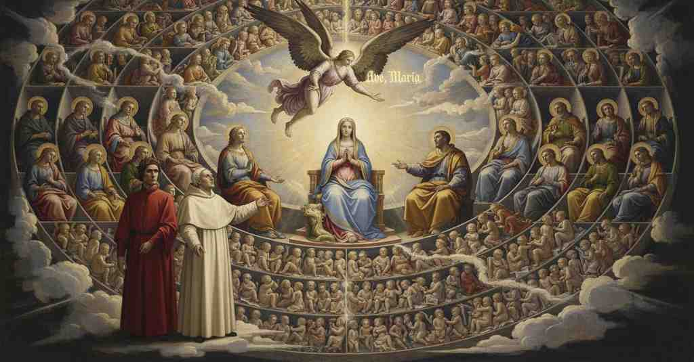

Paradiso — Canto 32

1
Affetto al suo piacer, quel contemplante
Devoted to his pleasure, that contemplative one
自らの喜びに心を寄せ、かの観想者は
2
libero officio di dottore assunse,
freely assumed the office of a teacher,
自由に師の職務を引き受け、
3
e cominciò queste parole sante:
and began these holy words:
そしてこれらの聖なる言葉を始めた。
4
«La piaga che Maria richiuse e unse,
«The wound that Mary closed and anointed,
「マリアが閉ざし、油を塗った傷、
5
quella ch’è tanto bella da’ suoi piedi
she who is so beautiful at her feet
その足元でかくも美しいかの女は
6
è colei che l’aperse e che la punse.
is she who opened it and who pierced it.
それを開き、それを刺した者である。
7
Ne l’ordine che fanno i terzi sedi,
In the order that the third seats make,
第三の座がなす順序のうちに、
8
siede Rachel di sotto da costei
Rachel sits beneath her
この女の下にラケルが座し
9
con Bëatrice, sì come tu vedi.
with Beatrice, just as you see.
ベアトリーチェと共に、そなたが見るように。
10
Sarra e Rebecca, Iudìt e colei
Sarah and Rebecca, Judith and she
サラとリベカ、ユディトと、かの女、
11
che fu bisava al cantor che per doglia
who was great-grandmother to the singer who, for sorrow
過ちの苦しみゆえに
12
del fallo disse ‘Miserere mei’,
of his sin, said ‘Have mercy on me’,
『我を憐れみたまえ』と唱えた歌い手の曽祖母を、
13
puoi tu veder così di soglia in soglia
you can see thus from tier to tier
そなたはそのように段から段へと
14
giù digradar, com’ io ch’a proprio nome
descending, as I, naming each by name,
下へ階を成すのを見ることができよう、私がその名を
15
vo per la rosa giù di foglia in foglia.
go down the rose from petal to petal.
薔薇を葉から葉へと下りながら呼ぶように。
16
E dal settimo grado in giù, sì come
And from the seventh rank down, just as
そして第七の階梯から下は、そこまで
17
infino ad esso, succedono Ebree,
up to it, Hebrew women follow in succession,
と同様に、ヘブライの女たちが続き、
18
dirimendo del fior tutte le chiome;
dividing all the tresses of the flower;
この花のすべての葉を分けている。
19
perché, secondo lo sguardo che fée
because, according to the gaze that faith
なぜなら、キリストへの信仰が向けた
20
la fede in Cristo, queste sono il muro
had in Christ, these are the wall
眼差しに従い、彼女たちは壁となって
21
a che si parton le sacre scalee.
at which the sacred stairs are parted.
聖なる階段はそこで分かたれるのだ。
22
Da questa parte onde ’l fiore è maturo
On this side where the flower is mature
花がそのすべての葉で満ちている
23
di tutte le sue foglie, sono assisi
with all of its petals, are seated
こちら側には、
24
quei che credettero in Cristo venturo;
those who believed in Christ to come;
来たるべきキリストを信じた者たちが座している。
25
da l’altra parte onde sono intercisi
on the other side where the semicircles
半円が空席で断たれている
26
di vòti i semicirculi, si stanno
are broken by empty spaces, are placed
向こう側には、
27
quei ch’a Cristo venuto ebber li visi.
those who had their faces toward Christ who had come.
来たりしキリストに顔を向けた者たちがいる。
28
E come quinci il glorïoso scanno
And as on this side the glorious throne
そして、こちら側で天の貴婦人の栄光の座と、
29
de la donna del cielo e li altri scanni
of the lady of heaven and the other thrones
その下の他の座が
30
di sotto lui cotanta cerna fanno,
beneath it make such a partition,
かくも大いなる区別をなしているように、
31
così di contra quel del gran Giovanni,
so opposite is that of the great John,
向かい側では大いなるヨハネの座が、
32
che sempre santo ’l diserto e ’l martiro
who, always holy, suffered the desert and martyrdom,
彼は常に聖にして荒野と殉教に耐え、
33
sofferse, e poi l’inferno da due anni;
and then Hell for two years;
その後二年地獄にいたが、そのように区別をなしている。
34
e sotto lui così cerner sortiro
and beneath him thus were allotted to divide
そしてその下にも同様に区別をなすべく定められた、
35
Francesco, Benedetto e Augustino
Francis, Benedict, and Augustine,
フランチェスコ、ベネディクトゥス、アウグスティヌス
36
e altri fin qua giù di giro in giro.
and others down to here from circle to circle.
そして他の者たちが、ここに至るまで環から環へと。
37
Or mira l’alto proveder divino:
Now behold the high divine providence:
さて、神の高遠なる摂理を見よ。
38
ché l’uno e l’altro aspetto de la fede
for the one and the other aspect of the faith
信仰の二つの相は
39
igualmente empierà questo giardino.
will equally fill this garden.
等しくこの庭園を満たすであろう。
40
E sappi che dal grado in giù che fiede
And know that from the tier downwards that strikes
そして知るがよい、二つの区別を分かつ線が
41
a mezzo il tratto le due discrezioni,
midway across the two divisions,
中ほどで打つその階級から下には、
42
per nullo proprio merito si siede,
one is seated not for one's own merit,
いかなる自らの功績によっても座るのではなく、
43
ma per l’altrui, con certe condizioni:
but for another's, with certain conditions:
他者の功績により、特定の条件の下で座るのだ。
44
ché tutti questi son spiriti ascolti
for all these are spirits released
なぜなら、これらは皆、解き放たれた魂であり、
45
prima ch’avesser vere elezïoni.
before they had true choices.
真の選択を持つ以前に、そうなったのだ。
46
Ben te ne puoi accorger per li volti
You can well perceive this by their faces
そのことは、その顔立ちからもよく分かるだろうし、
47
e anche per le voci püerili,
and also by their childlike voices,
また、その幼い声からも分かるだろう、
48
se tu li guardi bene e se li ascolti.
if you look at them well and if you listen.
もしお前がよく彼らを見、よく聞くならば。
49
Or dubbi tu e dubitando sili;
Now you doubt and, doubting, are silent;
今お前は疑い、疑って沈黙している。
50
ma io discioglierò ’l forte legame
but I will loosen the strong bond
だが私は、お前を縛っている強い絆を解き放とう、
51
in che ti stringon li pensier sottili.
in which your subtle thoughts bind you.
その精妙な思考がお前を締め付けている絆を。
52
Dentro a l’ampiezza di questo reame
Within the breadth of this realm
この王国の広がりの中には、
53
casüal punto non puote aver sito,
no point of chance can have a place,
偶然の一点たりとも場所を得ることはできぬ、
54
se non come tristizia o sete o fame:
any more than sadness or thirst or hunger:
それは悲しみや渇きや飢えと同じことだ。
55
ché per etterna legge è stabilito
for by eternal law is established
なぜなら、永遠の法によって定められているのだ、
56
quantunque vedi, sì che giustamente
all that you see, so that justly
お前の見るものすべては。ゆえに正しく
57
ci si risponde da l’anello al dito;
the ring here corresponds to the finger;
指輪が指に合うように、ここでは応じ合っている。
58
e però questa festinata gente
and therefore this hasted people
それゆえに、この急いで来た人々が、
59
a vera vita non è sine causa
to true life is not without cause
真の生命へと至ったのが、故なくして
60
intra sé qui più e meno eccellente.
more and less excellent among themselves.
この場所で互いに多かれ少なかれ優れているのではない。
61
Lo rege per cui questo regno pausa
The King for whom this kingdom rests
この王国が安らうところの王は、
62
in tanto amore e in tanto diletto,
in so much love and so much delight
かくも大いなる愛とかくも大いなる歓喜のうちに、
63
che nulla volontà è di più ausa,
that no will dares for more,
いかなる意志もそれ以上を望むことはなく、
64
le menti tutte nel suo lieto aspetto
creating all minds in His glad sight,
その喜ばしい御姿のうちにすべての精神を
65
creando, a suo piacer di grazia dota
He, at his pleasure, endows with grace
創造し、その御心に従って恩寵を異なって授ける。
66
diversamente; e qui basti l’effetto.
diversely; and here let the effect suffice.
そしてここではその結果だけで十分とせよ。
67
E ciò espresso e chiaro vi si nota
And this is noted expressly and clearly for you
そしてこのことは、聖書の中に
68
ne la Scrittura santa in quei gemelli
in Holy Scripture in those twins
明確に記されている、あの双子の例で、
69
che ne la madre ebber l’ira commota.
who in the mother had their wrath stirred.
母の胎内で怒りをかき立てられた双子の。
70
Però, secondo il color d’i capelli,
Therefore, according to the color of the hair,
それゆえに、その髪の色に従って、
71
di cotal grazia l’altissimo lume
with such grace the highest light
かくの如き恩寵の至高の光が、
72
degnamente convien che s’incappelli.
must worthily be crowned.
ふさわしく冠を戴くのは当然なのだ。
73
Dunque, sanza mercé di lor costume,
Therefore, without merit of their own conduct,
よって、彼らの行いの功績によらず、
74
locati son per gradi differenti,
they are placed on different tiers,
彼らは異なる階級に置かれている、
75
sol differendo nel primiero acume.
differing only in their primal keenness.
ただ根源的な鋭さにおいてのみ異なっている。
76
Bastavasi ne’ secoli recenti
It was enough in recent centuries
初期の時代においては、救いを得るためには、
77
con l’innocenza, per aver salute,
with innocence, to have salvation,
無垢であることと共に、
78
solamente la fede d’i parenti;
only the faith of their parents;
ただ両親の信仰だけで十分であった。
79
poi che le prime etadi fuor compiute,
after the first ages were complete,
その最初の時代が終わると、
80
convenne ai maschi a l’innocenti penne
it was needful for males, for their innocent wings,
無垢なる翼を持つ男子は、割礼によって
81
per circuncidere acquistar virtute;
to acquire virtue through circumcision;
徳を得ることが必要となった。
82
ma poi che ’l tempo de la grazia venne,
but after the time of grace had come,
だが恩寵の時代が来ると、
83
sanza battesmo perfetto di Cristo
without the perfect baptism of Christ,
キリストによる完全な洗礼なくしては、
84
tale innocenza là giù si ritenne.
such innocence was held there below.
そのような無垢は、かの下（辺獄）に留め置かれるのだ。
85
Riguarda omai ne la faccia che a Cristo
Look now upon the face that to Christ
さあ、キリストに最も似た顔を
86
più si somiglia, ché la sua chiarezza
is most like, for its brightness
見つめよ、というのもその輝きだけが
87
sola ti può disporre a veder Cristo».
alone can dispose you to see Christ.”
あなたにキリストを見る準備をさせることができるからだ」。
88
Io vidi sopra lei tanta allegrezza
I saw above her so much joy
私は彼女の上に、大いなる喜びが
89
piover, portata ne le menti sante
rain down, carried by the holy minds
降り注ぐのを見た、その高みを飛び越えるために創られた
90
create a trasvolar per quella altezza,
created to fly through that height,
聖なる心たちによって運ばれて、
91
che quantunque io avea visto davante,
that whatever I had seen before,
これまで私が見てきたどんなものも、
92
di tanta ammirazion non mi sospese,
did not hold me in such admiration,
これほどの驚嘆で私を捉えはせず、
93
né mi mostrò di Dio tanto sembiante;
nor showed me so much of God’s semblance;
神のこれほどの面影を私に見せはしなかった。
94
e quello amor che primo lì discese,
and that love which first descended there,
そして、最初にそこに降りてきたあの愛は、
95
cantando ‘Ave, Maria, gratïa plena’,
singing ‘Ave, Maria, gratia plena’,
「アヴェ・マリア、恵みに満ちた方」と歌いながら、
96
dinanzi a lei le sue ali distese.
spread his wings before her.
彼女の前でその翼を広げた。
97
Rispuose a la divina cantilena
To the divine canticle replied
その神聖な歌に応えたのは
98
da tutte parti la beata corte,
from all sides the blessed court,
あらゆる場所から祝福された宮廷であり、
99
sì ch’ogne vista sen fé più serena.
so that every sight became more serene.
それによってすべての顔はより晴れやかになった。
100
«O santo padre, che per me comporte
“O holy father, who for my sake endures
「おお、聖なる父よ、私のために
101
l’esser qua giù, lasciando il dolce loco
to be down here, leaving the sweet place
ここにいることを耐え忍び、あなたが永遠の運命によって
102
nel qual tu siedi per etterna sorte,
in which you sit by eternal lot,
座している甘美な場所を離れてこられた方よ、
103
qual è quell’ angel che con tanto gioco
who is that angel who with such playfulness
あれほどの喜びをもって、我らの女王の目を
104
guarda ne li occhi la nostra regina,
looks into the eyes of our queen,
見つめているあの天使は誰ですか、
105
innamorato sì che par di foco?».
so in love that he seems to be of fire?”.
恋い焦がれて火のように見えるほどに？」。
106
Così ricorsi ancora a la dottrina
Thus I resorted again to the teaching
このようにして私は再び、マリアを
107
di colui ch’abbelliva di Maria,
of him who was beautified by Mary,
美しく飾った者の教えに頼った、
108
come del sole stella mattutina.
as by the sun the morning star.
太陽によって明けの明星が飾られるように。
109
Ed elli a me: «Baldezza e leggiadria
And he to me: “Boldness and gracefulness
そして彼は私に言った。「天使と魂にありうる
110
quant’ esser puote in angelo e in alma,
as much as can be in angel and in soul,
限りの快活さと優雅さは、
111
tutta è in lui; e sì volem che sia,
is all in him; and we so will it be,
すべて彼の中にあり、私たちはそうあってほしいと願う、
112
perch’ elli è quelli che portò la palma
because he is the one who brought the palm
なぜなら彼こそが、神の御子が
113
giuso a Maria, quando ’l Figliuol di Dio
down to Mary, when the Son of God
我らの肉体を背負おうとされたとき、
114
carcar si volse de la nostra salma.
willed to be burdened with our flesh.
マリアのもとへ棕櫚の枝を運んだ者だからだ。
115
Ma vieni omai con li occhi sì com’ io
But come now with your eyes as I
しかし、さあ、私が語るのに合わせて
116
andrò parlando, e nota i gran patrici
will go on speaking, and note the great patricians
目を向けよ、そしてこの最も公正で敬虔な
117
di questo imperio giustissimo e pio.
of this most just and pious empire.
帝国の偉大な貴族たちに注目せよ。
118
Quei due che seggon là sù più felici
Those two who sit up there most happy
あそこに座している、最も幸福なあの二人は、
119
per esser propinquissimi ad Agusta,
for being closest to the Empress,
皇后に最も近いため、
120
son d’esta rosa quasi due radici:
are of this rose almost two roots:
この薔薇のほとんど二つの根である。
121
colui che da sinistra le s’aggiusta
he who on the left is next to her
彼女の左側に座している者は、
122
è il padre per lo cui ardito gusto
is the father through whose daring taste
その大胆な味わいのゆえに人類が
123
l’umana specie tanto amaro gusta;
the human species tastes such bitterness;
これほど苦い味を味わうことになった父である。
124
dal destro vedi quel padre vetusto
on the right you see that ancient father
右側には、キリストがこの愛らしい花の
125
di Santa Chiesa a cui Cristo le chiavi
of Holy Church to whom Christ the keys
鍵を託された、聖なる教会の
126
raccomandò di questo fior venusto.
entrusted of this lovely flower.
あの年老いた父が見える。
127
E quei che vide tutti i tempi gravi,
And he who saw all the hard times,
そして、槍と釘で手に入れた
128
pria che morisse, de la bella sposa
before he died, of the beautiful bride
美しい花嫁の、死ぬ前に
129
che s’acquistò con la lancia e coi clavi,
who was won with the lance and with the nails,
あらゆる困難な時代を見た者は、
130
siede lungh’ esso, e lungo l’altro posa
sits alongside him, and alongside the other rests
彼の隣に座し、もう一方の隣には、
131
quel duca sotto cui visse di manna
that leader under whom lived on manna
その指導者のもとで、恩知らずで、移り気で、反抗的な民が
132
la gente ingrata, mobile e retrosa.
the ungrateful, fickle, and backward people.
マンナで生きたあの指導者が休んでいる。
133
Di contr’ a Pietro vedi sedere Anna,
Opposite Peter you see Anna sitting,
ペテロの向かいにはアンナが座っているのが見える、
134
tanto contenta di mirar sua figlia,
so content to gaze upon her daughter,
娘を見つめることにとても満足しており、
135
che non move occhio per cantare osanna;
that she does not move an eye to sing hosanna;
ホザンナを歌うためにも目を動かさない。
136
e contro al maggior padre di famiglia
and opposite the greatest father of the family
そして、最も偉大な家の父の向かいには、
137
siede Lucia, che mosse la tua donna
sits Lucia, who moved your lady
ルチアが座している、あなたが破滅へと
138
quando chinavi, a rovinar, le ciglia.
when you were bending, to your ruin, your brow.
眉を伏せていた時に、あなたの貴婦人を動かした者だ。
139
Ma perché ’l tempo fugge che t’assonna,
But because the time flies that makes you sleepy,
しかし、あなたを眠らせる時が逃げていくので、
140
qui farem punto, come buon sartore
here we will make a stop, like a good tailor
ここで終わりにしよう、良い仕立屋が
141
che com’ elli ha del panno fa la gonna;
who as he has the cloth makes the gown;
持っている布の分だけ衣を作るように。
142
e drizzeremo li occhi al primo amore,
and we will direct our eyes to the first love,
そして私たちは目を最初の愛に向けよう、
143
sì che, guardando verso lui, penètri
so that, looking toward him, you may penetrate
彼の方を見つめることで、その輝きを通して
144
quant’ è possibil per lo suo fulgore.
as far as is possible through his effulgence.
可能な限り深く貫くことができるように。
145
Veramente, ne forse tu t’arretri
Truly, lest perhaps you fall back
実に、君が自分の翼を動かして、進もうと信じて
146
movendo l’ali tue, credendo oltrarti,
moving your wings, thinking to advance,
後ずさりしないように、
147
orando grazia conven che s’impetri
by praying for grace it is fitting to obtain
祈りによって恩寵を得ることが必要だ、
148
grazia da quella che puote aiutarti;
grace from her who can help you;
あなたを助けることのできるあの方からの恩寵を。
149
e tu mi seguirai con l’affezione,
and you will follow me with affection,
そしてあなたは愛情をもって私に従うだろう、
150
sì che dal dicer mio lo cor non parti».
so that from my speech your heart does not part.”
私の言葉から心が離れないように」。
151
E cominciò questa santa orazione:
And he began this holy orison:
そしてこの聖なる祈りを始めた。